Step 1:
Refer to Figure P6.112 in the textbook for the equivalent circuit of an amplifier in which feedback resistance  models the internal feedback mechanism that is present in the amplifier. Resistance
models the internal feedback mechanism that is present in the amplifier. Resistance  makes the amplifier non-unilateral.
makes the amplifier non-unilateral.
The input resistance can be calculated from the following equivalent circuit.
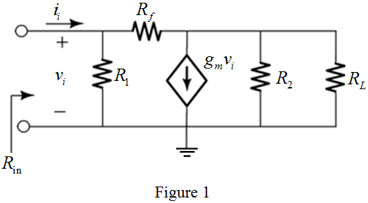
Step 2:
In Figure 1, the resistors and  are in parallel. The equivalent circuit is shown in Figure 2.
are in parallel. The equivalent circuit is shown in Figure 2.
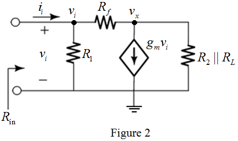
Step 3:
Apply nodal analysis at node in Figure 2.
…… (1)
Apply nodal analysis at node in Figure 2.
Step 4:
Substitute  for in equation (1) to derive the expression for input resistance.
for in equation (1) to derive the expression for input resistance.
Step 5:
Further simplification as follows,
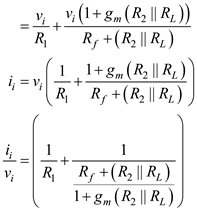
Thus, the expression for input resistance of the amplifier is,
.
Step 6:
The gain can be calculated from the following equivalent circuit.
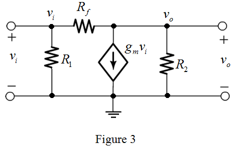
Step 7:
Apply nodal analysis at node in Figure 3.
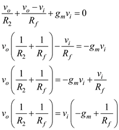
Step 8:
Further simplification as follows,
Thus, the expression for voltage gain of the amplifier is,
.
Step 9:
To find the output resistance set  to zero by short circuiting the input terminals. Then, the dependent current source is open circuited. The equivalent circuit is shown in Figure 4.
to zero by short circuiting the input terminals. Then, the dependent current source is open circuited. The equivalent circuit is shown in Figure 4.
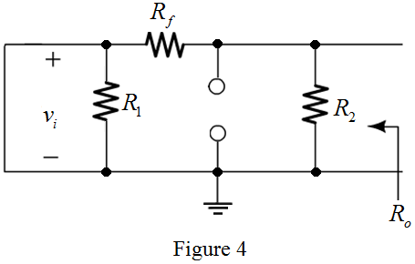
Step 10:
Since there is a short circuit across the resistor , resistor can be eliminated. Now, the equivalent circuit is shown in Figure 5.
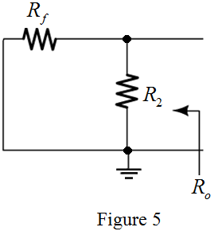
From Figure 5, derive the expression for output resistance.

Thus, the expression for output resistance of the amplifier is,
.
Step 11:
Determine the value of the input resistance.

Substitute  for ,
for ,  for
for  , for
, for  ,
,  for
for  and
and  for
for  in the equation.
in the equation.
Thus, the value of input resistance,  is
is
Step 12:
Determine the value of voltage gain.
Substitute  for
for  ,
,  for
for  , and
, and  for
for  in the equation.
in the equation.
Thus, the value of voltage gain of the amplifier, is.
Step 13:
Determine the value of output resistance.
Substitute  for
for  and
and  for in the equation.
for in the equation.
Thus, the value of output resistance of the amplifier, is.
Step 14:
Step 15:
Determine the value of voltage gain  for.
for.
Substitute  for
for  , for
, for  , and
, and  for
for  in the equation.
in the equation.
Thus, the value of voltage gain of the amplifier for is,
.
Step 16:
Determine the value of output resistance for  .
.
Substitute for  and
and  for
for  in the equation.
in the equation.
Thus, the value of output resistance of the amplifier for  is,
is,
.
Step 17:
From the parameter values obtained for

and, the input resistance

is most effected by

because the gain changes from to

and the output resistance changes from to

but the input resistance changes from to

. So, the characteristic parameter is most effected by

.
Step 18:
Consider the following circuit to find the overall gain of an amplifier with  present.
present.
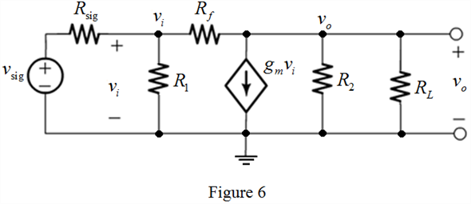
Step 19:
In Figure 6, the resistors  and are in parallel. The equivalent circuit is shown in Figure 7.
and are in parallel. The equivalent circuit is shown in Figure 7.
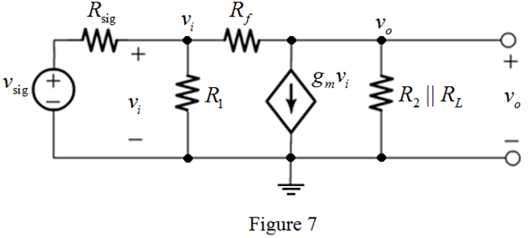
Step 20:
Apply nodal analysis at node in Figure 7.
Further simplification as follows,

…… (2)
Step 21:
Apply voltage division rule to write the expression for input voltage in Figure 7.
Substitute for in equation (2), to derive the expression for overall voltage gain of the amplifier.
Thus, the expression for overall voltage gain with present is,
.
Step 22:
Consider the following circuit to find the overall gain of an amplifier without present.
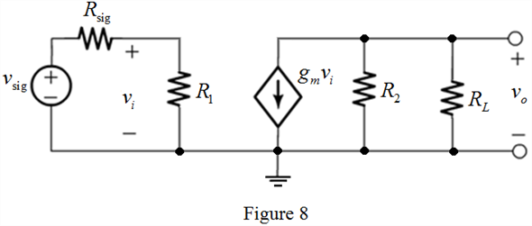
Step 23:
In Figure 8, the resistors  and
and  are in parallel. The equivalent circuit is shown in Figure 9.
are in parallel. The equivalent circuit is shown in Figure 9.
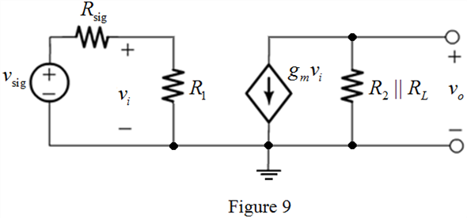
Step 24:
From Figure 9, the expression for output voltage is,
…… (3)
Apply voltage division rule to write the expression for input voltage in Figure 9.
Substitute for  in equation (3), to derive the expression for overall voltage gain of the amplifier.
in equation (3), to derive the expression for overall voltage gain of the amplifier.
Thus, the expression for overall voltage gain without  is,
is,
 .
.
 .
. for
for  ,
,  for
for  ,
,  for
for  ,
,  for
for  and
and  for in the equation.
for in the equation. is, .
is, .